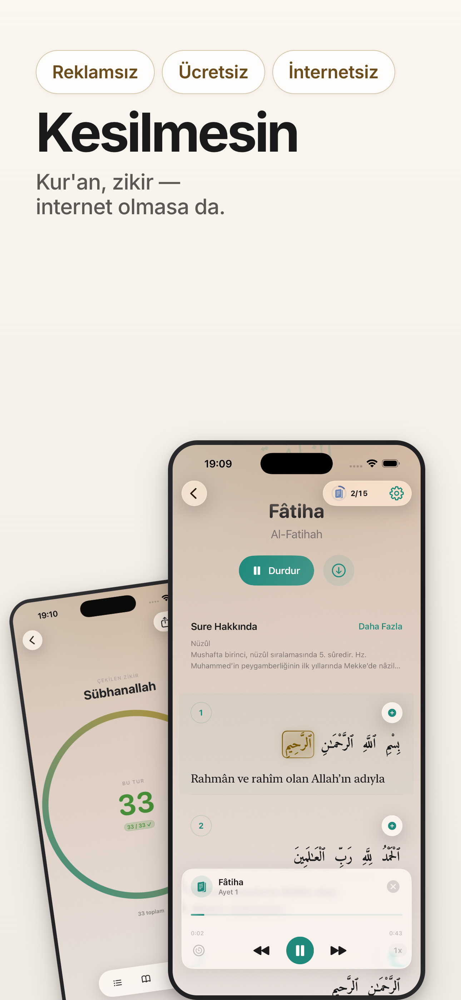
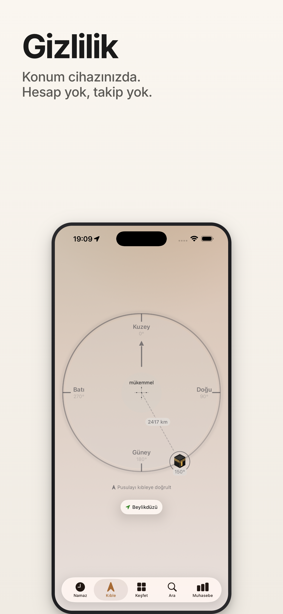
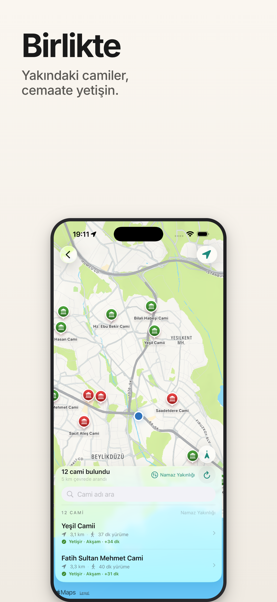
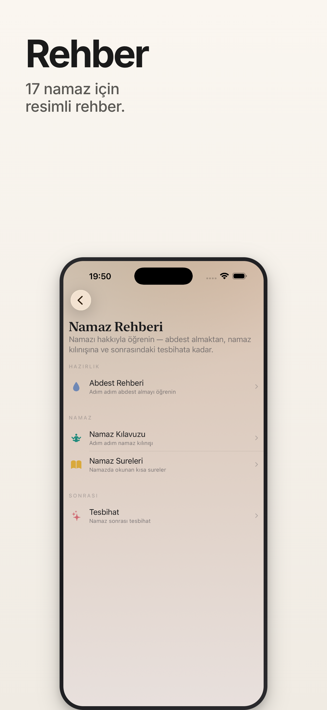
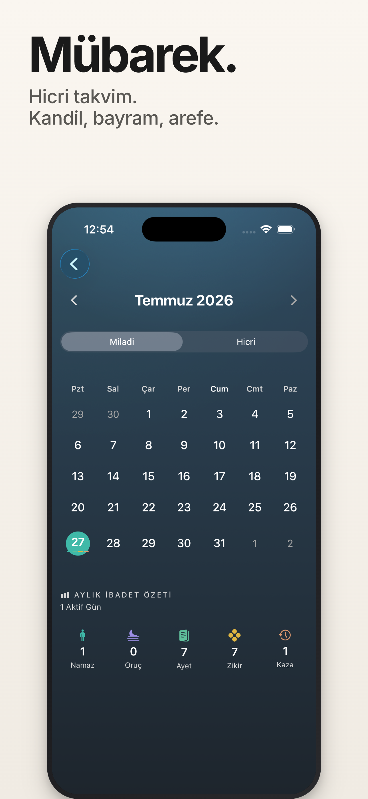
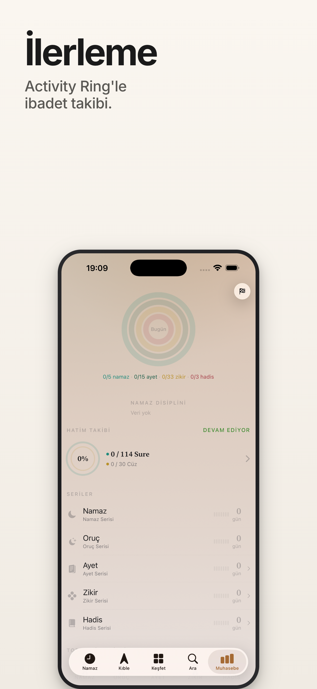

Vakit
İbadet Uygulaması Nasıl Olmalıysa, Öyle.
Reklamsız
Siz sadece ibadetinize odaklanın. Konumunuza göre namaz vakitlerini anlık takip edin. Türkiye (Diyanet) dahil 22 farklı hesaplama yöntemi. Her yerde, internetsiz, huzurla.

Ücretsiz, Premium Tadında
Live Activities, Dynamic Island, kilit ekranı widget'ları ve StandBy desteği. Tüm premium özellikler tamamen ücretsiz.

İnternetsiz
Her yerde, her zaman. 114 sure tam metin okuma, kelime kelime analiz ve Diyanet tefsiri. Ayetleri oku veya dinle, ilerlemeni takip et, kaydet, öğren.

Oku, Dinle, Takip Et
Modern arayüz veya geleneksel Mushaf (kitap) görünümü; sana kalmış. Sesli tilavet desteği, hatim takibi ve secde ayeti uyarıları.

Vakit Hep Yanında
Ana ekran ve kilit ekranında namaz vakitleri. Dynamic Island, widget'lar ve StandBy desteği.

Kilit Ekranında Bile
Kilit ekranında namaz vakitleri, geri sayım ve günün ayeti. Telefonunuzu açmadan her şeyi görün.

14+ İbadet Aracı, Tek Uygulama
İhtiyacınız olan her şey Vakit'te.
Emanet
Verileriniz sizin emanetidir.
Diğer ibadet uygulamaları konum verilerinizi üçüncü taraflara satarken, Vakit farklı bir yol seçti. Verileriniz cihazınızdan asla çıkmaz. Hesap açmanız gerekmez. Takip edilmezsiniz.
Hesap Gerektirmez
Kayıt yok, giriş yok. İndir ve kullan.
Takip Yok
GPS koordinatlarınız hiçbir sunucuya gönderilmez.
Her Şey Cihazınızda
Namaz hesaplamaları, Kur'an, zikirler — tümü yerel.
Şeffaf Gizlilik
Yalnızca anonim kullanım verisi, açık gizlilik politikası.
Kullanıcı Yorumları
Harika
Bu tarz uygulamalar hep menfur olmakta lakin bu uygulama bir harika. Geliştiriciden Allah razı olsun. Kur'an özelliği başlı başına çok güzel. Kıble doğru yönde. Şiddetle tavsiye ederim.
Kıbleyi Anında Bul
Görsel pusula ile Kâbe yönünü her yerde bulun. Haptik geri bildirim, Kâbe'ye mesafe bilgisi ve hassas yön hesaplama.

Gelişmiş Zikirmatik
Görsel ilerleme halkası ile zikir çekin. Özel zikirler ekleyin, toplam sayılarınızı takip edin ve ibadetinizi kayıt altına alın.

Hiçbir Anı Kaçırma
Gelişmiş takvim ile Ramazan, Kadir Gecesi ve tüm özel günleri takip edin. İbadet özeti, namaz takibi ve günlük istatistikler.

Neden Vakit?
Diğer uygulamalarda sizi rahatsız eden sorunları biliyoruz. Vakit, farklı olmak için tasarlandı.
Sıfır Reklam
Casino ve uygunsuz içerikli reklamlar dini içerikle aynı ekranda
Hiçbir reklam yok. Temiz, huzurlu bir ibadet deneyimi
Emanet: Gizlilik
Konum verileri üçüncü taraflara satılma skandalları
Verileriniz cihazınızdan asla çıkmaz. Takip yok, satış yok
Tam Çevrimdışı
Bazı özellikler internet bağlantısı gerektiriyor
Namaz, Kıble, Kur'an, Zikir — her şey internetsiz çalışır
Live Activity & Widget
Widget'lar iOS güncellemelerinde bozuluyor veya hiç yok
Dynamic Island, kilit ekranı ve StandBy'da kesintisiz takip
Doğru Hesaplama
Yaz/kış saati geçişlerinde hatalar, sınırlı hesaplama yöntemi
22 hesaplama yöntemi, timezone-aware, seyahat algılama
Modern Tasarım
Eski, karmaşık arayüzler; güncelleme sonrası bozulmalar
iOS 18+ Liquid Glass tasarım, sade ve akıcı deneyim
Kullanıcı Yorumları
Mükemmel
Vallaha benim işi gördü ben normalde sahur ve iftar için aldım kıble yönü namaz saatleri falan bi de daha çok şey var çok memnun kaldım
Harika
Bu tarz uygulamalar hep menfur olmakta lakin bu uygulama bir harika. Geliştiriciden Allah razı olsun. Kur'an özelliği başlı başına çok güzel. Kıble doğru yönde. Şiddetle tavsiye ederim.
Vakit
Harika bir uygulama olmuş teşekkürler Hakan Çelik.
Tertemiz uygulama
Sade amacına uygun, saçma sapan özellik ve reklam yok, tertemiz uygulama olmuş. Eline sağlık yapan arkadaşın.
Sadece Vakit'te
Başka hiçbir uygulamada bulamayacağınız özellikler.
Namaz Bitiş Uyarısı
Vakit çıkmadan önce uyarı alın — hiçbir namazı kaçırmayın.
Kerahat Vakitleri
Diyanet verilerine dayalı kerahat vakitlerini görün.
Güneş & Ay Yay Görseli
Gün döngüsünü astronomik yay ile görselleştirin.
Namaz Sureleri
Namazda okunan sureler — Arapça metin ve Türkçe okunuş.
Activity Rings
Apple tarzı halka sistemi ile günlük ibadet takibi.
Çevrimdışı Öncelikli
Tüm temel özellikler internet bağlantısı olmadan çalışır. İbadet, internete bağlı olmamalıdır.
Gizlilik Öncelikli
Kişisel verileriniz cihazınızdan ayrılmaz. Hesap gerektirmez, takip etmez.
Sade & Hızlı
Gereksiz karmaşıklık yok. Aradığınıza saniyeler içinde ulaşın, temiz ve akıcı bir deneyim yaşayın.
Sıkça Sorulan Sorular
Hemen İndirin
Vakit uygulamasını App Store'dan ücretsiz indirin ve tüm özelliklerden faydalanın!
Ücretsiz İndirYakında Android sürümü ile birlikte • Tamamen ücretsiz